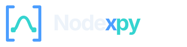
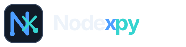
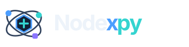
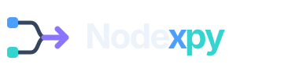
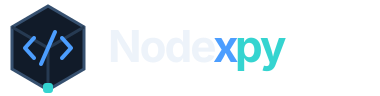
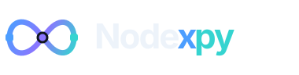

Bracket Flow
Code brackets frame a live workflow strand, balancing Python and visual automation.
CODE + CANVASNew marks exploring code brackets, monograms, orchestration, pipelines, portable code, and continuous execution.





